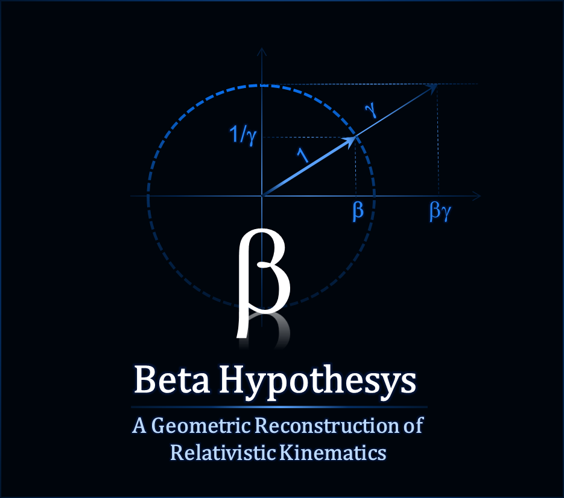

Independent theoretical research
Deriving Relativity, Not Assuming It
Special relativity is usually built on two postulates. The Beta Hypothesis asks what happens if you don't assume them — and instead derive Lorentz invariance, time dilation, and relativistic energy from a single local geometric constraint on a fiber bundle.

β Beta Hypothesis
The Beta Hypothesis reconstructs relativistic kinematics — time dilation, length contraction, relativistic energy — from a local geometric constraint linking observable motion to an internal periodic degree of freedom. Lorentz invariance is not assumed: it follows as a consequence.
The basic structure is a fiber bundle of the form D¹ × S¹, where motion along the observable direction and motion along an internal circular degree of freedom are linked by a local relation.
Why Beta?
Most approaches take the Lorentz transformations as given and build outward from them. Beta inverts the logic: it starts from a single geometric constraint and asks how much of relativistic kinematics can be recovered as a consequence, rather than an assumption. The constraint comes first; the familiar physics comes out the other end.
Three Key Ideas
Geometric Constraint
Particles are described through a geometric structure in which observable motion and internal phase motion are locally connected.
Harmonic Energy
Rest energy and relativistic energy are two manifestations of the same underlying harmonic structure, not separate quantities patched together.
Open Research
The current work covers relativistic kinematics. Extensions toward electromagnetism, gravitation and quantum theory are active research directions — see Open Questions for where the program stands today.
Latest Publication
Beta Hypothesis
A Geometric Reconstruction of Relativistic Kinematics
Ongoing independent research by Alessandro Venca.
Scientific Discussion
This site presents ongoing theoretical work for scientific discussion, critical review, and literature comparison. Feedback, objections, and references to related work are welcome.
Contact
Alessandro Venca
Independent researcher based in Switzerland
Email: venca.alessandro@proton.me